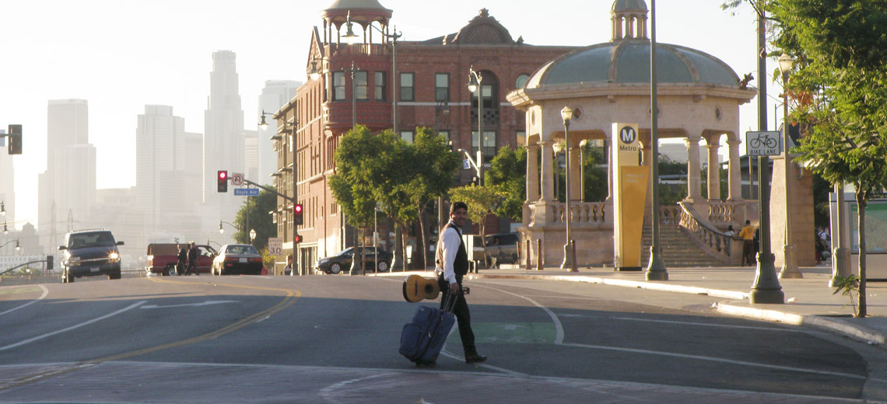
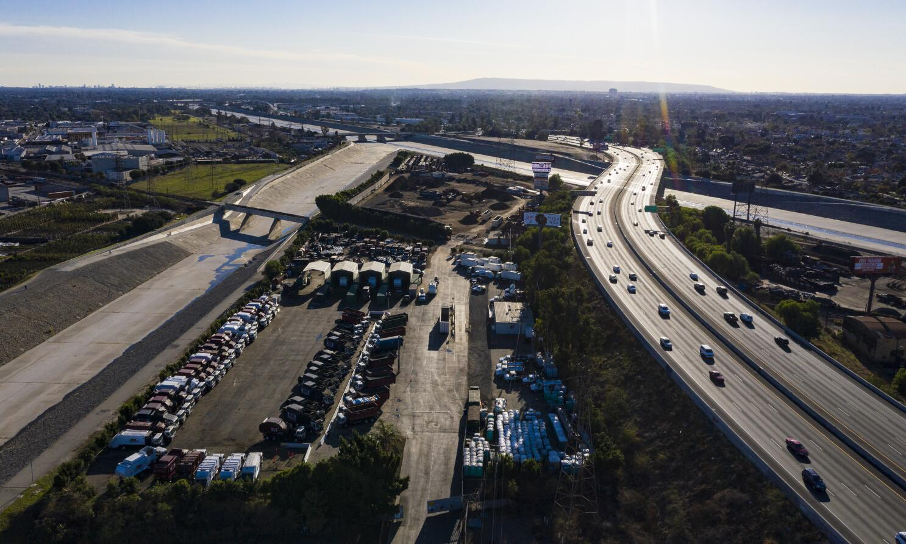

LA Metro Light Rail and the Politics of Housing and Transit Mobility
The expansion of Los Angeles' light rail system into East Los Angeles has reshaped the politics of neighborhood change.
Exploring community perspectives on urban space and development in East LA.
The Unmapped Urban Futures Lab is a research collective at UNC Chapel Hill that studies how marginalized communities reshape cities from the ground up. The lab centers the experiences, strategies, and political innovations of neighborhoods navigating gentrification, displacement, and uneven development. Through oral histories, archival research, and participatory mapping, we examine how communities not only resist dispossession but build alternative infrastructures of planning, governance, and care.
Bringing together undergraduate and graduate researchers, the lab treats research as a collaborative and ethical practice. Students are trained to analyze qualitative and spatial data while engaging questions of power, representation, and data justice. Across projects, the lab asks: what becomes visible and what remains hidden when we map urban change through the struggles and visions of those most impacted by it?
The lab integrates qualitative and spatial methods to study urban change as a lived and contested process. Our work combines oral history, archival analysis, and GIS-based mapping to document both realized and unrealized development.
We treat data as relational and prioritize ethical practices that protect participants while amplifying their knowledge. We aim to support new ways of learning about cities centering care, accountability, and community-driven movements.
Current projects include building digital archives, interactive StoryMaps, and geospatial databases that visualize community struggles, policy decisions, and alternative development pathways.

The expansion of Los Angeles' light rail system into East Los Angeles has reshaped the politics of neighborhood change.

The decades-long struggle over the proposed extension of the 710 Freeway through East Los Angeles reveals how infrastructure planning can both produce and be transformed by community resistance.

Ashley Hernández is an Assistant Professor in the Department of City and Regional Planning at the University of North Carolina at Chapel Hill. Her research examines housing mobility, community development, and anti-displacement strategies in historically marginalized neighborhoods. Drawing on ethnography, archival research, and spatial analysis, her work explores how racialized real estate systems shape neighborhood inequality and how community-based organizations, tenant movements, and grassroots coalitions build power to steward land and secure long-term stability. Her scholarship connects planning practice to broader questions of race, migration, urban governance, and territorial belonging. Through her teaching and research collaborations, she works closely with students and community partners to advance more equitable, community-led approaches to housing and neighborhood development.
Matthew Palm is an Assistant Professor in the Department of City and Regional Planning at UNC Chapel Hill. Dr. Palm works with public agencies and community organizations to understand how transportation systems affect people’s daily lives. His research focuses on how investments in infrastructure influence travel behavior, health, and economic participation. Transportation projects often bring both benefits and costs. For example, a new highway may improve access for some travelers while introducing air quality impacts for nearby neighborhoods. Palm studies these trade-offs to help planners design systems that maximize overall public benefit while minimizing unintended harms. He also examines how barriers in transportation networks-such as long travel times or lack of late-night service-affect access to essential activities like medical care, school, and work. His work explores how reducing these barriers can strengthen communities and support broader policy goals. Currently, Dr. Palm is studying the travel patterns of shift workers and their families, with attention to the challenges faced by people who travel at night in a 24-hour economy. Dr. Palm has also published research on housing and transportation in the United States, Canada, and Australia.

UNC Master’s in City and Regional Planning, 2027
UNC Environmental Studies, B.A. + GIS minor, 2025
Lydia is a master’s student in the Department of City and Regional Planning with a focus on transportation planning. Her interests include equitable access to transit, multimodal planning, and increasing mobility. With the Unmapped Urban Futures lab, she has previously examined various stakeholder and community perspectives on development in Boyle Heights. Currently, she is qualitatively coding sections of the Goldline Metro Environmental Impact Statement to gain a better understanding of how LA Metro justified this development.